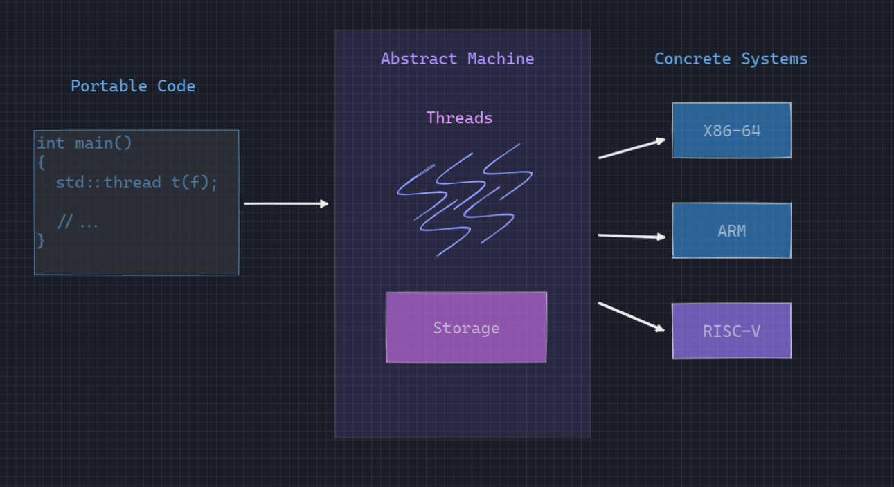

<!DOCTYPE html>
<html lang="en">
  <head>
    <meta charset="utf-8" />
    <meta name="viewport" content="width=device-width, initial-scale=1.0, maximum-scale=1.0, user-scalable=no" />

    <title>UB demon</title>
    <link rel="shortcut icon" href="./favicon.ico" />
    <link rel="stylesheet" href="./dist/reset.css" />
    <link rel="stylesheet" href="./dist/reveal.css" />
    <link rel="stylesheet" href="./_assets/theme/night.css" id="theme" />
    <link rel="stylesheet" href="./css/highlight/github-dark.css" />


  </head>
  <body>
    <div class="reveal">
      <div class="slides"><section  data-markdown><script type="text/template">

## Undefined Behavior


<h4 class="fragment fade-up" style="color:#e3554b">
; ) Demons fly out of your nose 
</h4> 

 <!-- .element height="40%" width="40%" -->

> 组长：杨傲伟 <br/> 组员：吴子健 <br/> 组员：吴峰沁 <br/> 组员：金科彤<!-- .element style="font-size:50%" -->

</script></section><section  data-markdown><script type="text/template">

## Overview&Goal

<div style="font-size:90%">

- Describe Undefined Behavior in general
- Introduce some baisc UB presentation
- Some cases in Linux kernel
- Reason for UB in C++

</div>

 <!-- .element height="45%" width="45%" -->

</script></section><section ><section data-markdown><script type="text/template">

## The Abstract Machine
<li class="fragment" align="left">
A portable abstraction of your operating system, kernel and hardware.
</li>
<!-- .element style="font-size:60%" -->

<li class="fragment" align="left">
The intermediary between your
C++ program and the system that it is run on.
</li>
<!-- .element style="font-size:60%" -->


<!-- .element height="75%" width="75%" -->

</script></section><section data-markdown><script type="text/template">
### More detial
 
<!-- .element height="75%" width="75%" -->

<p class="fragment" style="color:#d5aefc">
It's not cool to write a program by machine code. 
</p>

</script></section></section><section ><section data-markdown><script type="text/template">

### Where is the Undefined Behavior?

<div class="fragment">

```c++
#include <cstdio>

int main() {
    puts("Hello, World!");
    return 0;
}
```
</div>

<p class="fragment" style="font-size:85%">
The programe executes by doing exactly what you specify!
</p>

<p class="fragment" style="font-size:100%;color:#4fe8ba">
Well-defined code!
</p>

</script></section><section data-markdown><script type="text/template">
#### Four Behavior In C++
<div class="r-stack">
<p class="fragment fade-in-then-out">
Well-defined Behavior
</p>
<!-- .element style="font-size:80%;" -->
<p class="fragment fade-in-then-out">
Implementation-defined Behavior & Unspecified Behavior
</p>
<!-- .element style="font-size:80%;" -->
<p class="fragment">
<b>Undefined Behavior</b>
</p>
<!-- .element style="font-size:80%;color:#d5aefc" -->
</div>
<p class="fragment" align="left">
undefined behavior - there are no restrictions on the behavior of the program.
</p>
<!-- .element style="font-size:60%;padding-left: 2rem;color:#d5aefc" -->

<!-- .element height="55%" width="55%" -->


</script></section><section data-markdown><script type="text/template">

### First example

```c++ [1-12|4-6]
#include <iostream>

auto foo() -> int {
    for (int i = 0; i < 10; ++i) {
        std::cout << "what happen?" << std::endl;
    }
}

int main() {
    foo();
    return 0;
}
```

<p class="fragment" style="font-size:100%;color:#d5aefc">
Compiler: No return? yeah, It's inf loop.
</p>

</script></section></section><section ><section data-markdown><script type="text/template">

## Some basic cases 

 <!-- .element height="65%" width="65%" -->

</script></section><section data-markdown><script type="text/template">

### Null Pointer Dereference

<p class="fragment" align="left">
In C: (void*)0 -> NULL
</p>
<!-- .element style="font-size:70%;padding-left: 2rem;" -->

<p class="fragment" align="left">
In C++: 0, NULL, nullptr
</p>
<!-- .element style="font-size:70%;padding-left: 2rem;" -->

<div class="r-stack"> 
<pre class="fragment fade-in-then-out"><code data-trim data-noescape>
void foo(bool *ok) 
    bool k = *ok;
    if (ok)
        std::cout << "ok" << std::endl;
}
<br/>
int main() {
    bool *ok = nullptr;
    foo(ok);
}
</code>
</pre> 

<pre class="fragment fade-in-then-out"><code data-trim data-noescape>
int main() {
    auto p = std::make_unique&lt;int&gt;(42);
    std::unique_ptr&lt;int&gt; p2 = std::move(p);
    *p = 42;
    std::cout << *p << std::endl;
}
</code></pre> 

<pre class="fragment"><code data-trim data-noescape>
static void (*fp)() = nullptr;<br/>
void evil() {
    system("rm -rf /")
}<br/>
void set_fp() {
    fp = evil;
}<br/> 
int main() {
    fp();
}
</code></pre> 

</div>


<p class="fragment" style="font-size:100%;color:#d5aefc">
???
</p>

</script></section><section data-markdown><script type="text/template">

#### this ???

``` c++ [1-13|7]
struct FieldType {
    auto None() -> FieldType * {
        return (FieldType *)(0);
    }

    auto IsNone() -> bool {
        return this == None();
    }
};

auto foo(FieldType *F) -> bool {
    return F->IsNone();
}
```

<p class="fragment" style="color:#d5aefc">It's undefined behavior when <b>this</b> is nullptr!!!</p>

</script></section><section data-markdown><script type="text/template">

### Signed Integer Overflow

<p class="fragment" style="font-size:70%;color:#d5aefc">
The max number of i32 is 2147483647.
</p>

<div class="fragment">

```c++ [1-13|8]
#include <iostream>

int main() {
    int x;
    std::cin >> x;
    std::cout << x + 2000000000 << std::endl;

    if (x > x + 2000000000) {
        std::cout << "Overflow!" << std::endl;
    }

    return 0;
}
```
</div>

<p class="fragment" style="color:#d188b4">
Compiler: Nonono! Overflow is impossible.
</p>

</script></section><section data-markdown><script type="text/template">

### Uninitialized Values

<div class="r-stack"> 
<pre class="fragment fade-in-then-out"><code data-trim data-noescape>
int random() {
    int x;
    return x;
}</br>
int check() {
    int x = random();
    if (x % 2)
        return 42;
    return 1;
}
</code></pre> 

<pre class="fragment"><code data-trim data-noescape>
int main() {
    int i;
    for (int j = i; j < 100; ++j)
        std::cout << j << std::endl;
    for (int j = i; j > 10; --j)
        std::cout << j << std::endl;
}
</code></pre> 
</div> 

<p class="fragment" style="color:#d188b4">
Compiler: ?, uninit var, I can assign it with any value, lazy!!!
</p>

</script></section><section data-markdown><script type="text/template">

### Strict Aliasing Rule

```c++ [1-13|1-6]
auto foo(int *a, float *b) -> int {
    *a = 42;
    *b = 4.2f;

    return *a;
}

int main() {
    int x = 0;
    std::cout << 
    foo(&x, reinterpret_cast<float *>(&x))
    << std::endl;
}
```

<p class="fragment" style="color:#d188b4">
Compiler: It's impossible for two different type pointers to point to the same place of memory!  
</p>

</script></section><section data-markdown><script type="text/template">

#### Special Case

<li class="fragment" style="font-size:70%" align="left">
Similar Type
</li>

<div class="fragment">

```c++
auto foo(int *a, unsigned int *b) -> int {
    *a = 42;
    *b = 33;
     
    return *a;
}
```
</div>

<li class="fragment" style="font-size:70%" align="left">
Special type: char *, void *
</li>

<div class="fragment">

```c++
auto foo(int *a, char *b) -> int {
    *a = 42;
    b[0] = b[1] = b[2] = b[3] = 0;

    return *a;
}
```
</div>

<p class="fragment" style="color:#face55">
Don't forget -fno-strict-aliasing
</p>

</script></section><section data-markdown><script type="text/template">

### Realloc

<div class="fragment">

```c++
int main() {
    int *p = (int *)malloc(sizeof(int));
    int *q = (int *)realloc(p, sizeof(int));
    *p = 1;
    *q = 2;

    if (p == q) {
        printf("%d %d\n", *p, *q);
    } 
}
```
</div>

<p class="fragment" style="color:#d188b4">
Compiler: p is invalid!!! 
</p>

</script></section></section><section ><section data-markdown><script type="text/template">

## Kernel UB Demons

 <!-- .element height="65%" width="65%" -->

</script></section><section data-markdown><script type="text/template">

### what about this?

```c [1-8|6-7]
char *buf = ...;
char *buf_end = ...;
unsigned int len = ...;
if (buf + len >= buf_end)
    return; /* len too large */
if (buf + len < buf)
    return; /* overflow, buf + len wrapped around */
/* write to buf[0..len-1]*/
```
> Towards Optimization-Safe Systems: Analyzing the Impact of Undefined Behavior
<!-- .element style="font-size:50%" -->
<p class="fragment" style="color:#e65310">The overflow checking code will be optimized!!!</p>

</script></section><section data-markdown><script type="text/template">

### Another kernel vulnerability

```c
struct tun_struct *tun = ...;
struct sock *sk = tun->sk;
if (!tun) 
    return POLLERR;
/* write to address based on tun */
```
> Null pointer dereference vulnerability (CVE-2009-1879) in the Linux kernel
<!-- .element style="font-size:50%" -->

<p class="fragment" style="color:#d5aefc">You have used the pointer before checking!</p>

</script></section></section><section  data-markdown><script type="text/template">

## Reasons For Undefined Behavior

<li class="fragment" align="left" style="font-size:95%">
Integers overflow was not defined because CPUs could do different things when it happen
</li>

<li class="fragment" align="left" style="font-size:95%">
Using uninitialized values is not defined because initializing with zero would be expensive
</li>

<li class="fragment" align="left" style="font-size:95%">
In order to define nullptr dereference we would need to check for null
</li>

<li class="fragment" align="left" style="font-size:95%">
In order to define buffer overflows we would have to insert bounds check everywhere
</li>

</script></section><section  data-markdown><script type="text/template">

### Fermat's Last Theorem

${\displaystyle x^{n}+y^{n}=z^{n}}$

<div class="fragment">

```c [1-15|5-8|12|1-15]
auto fermat() -> bool {
    static const int MAX = 1000;
    int a = 1, b = 1, c = 1;
    while(true) {
        if (a * a * a == b * b * b + c * c * c) {
            printf("disprove!\n");
            return false;
        }
        a++;
        if (a > MAX) { a = 1; b++; }
        if (b > MAX) { b = 1; c++; }
        if (c > MAX) { c = 1; }
    }
    return true;
}
```
</div>

</script></section><section  data-markdown><script type="text/template">

## Conclusion

- No Return 
- Null Pointer Dereference
- Signed Integer Overflow
- Uninitilized Value
- Strict Aliasing Rule
- No Effect


</script></section><section  data-markdown><script type="text/template">

# See you next time!</script></section></div>
    </div>

    <script src="./dist/reveal.js"></script>

    <script src="./plugin/markdown/markdown.js"></script>
    <script src="./plugin/highlight/highlight.js"></script>
    <script src="./plugin/zoom/zoom.js"></script>
    <script src="./plugin/notes/notes.js"></script>
    <script src="./plugin/math/math.js"></script>
    <script>
      function extend() {
        var target = {};
        for (var i = 0; i < arguments.length; i++) {
          var source = arguments[i];
          for (var key in source) {
            if (source.hasOwnProperty(key)) {
              target[key] = source[key];
            }
          }
        }
        return target;
      }

      // default options to init reveal.js
      var defaultOptions = {
        controls: true,
        progress: true,
        history: true,
        center: true,
        transition: 'default', // none/fade/slide/convex/concave/zoom
        plugins: [
          RevealMarkdown,
          RevealHighlight,
          RevealZoom,
          RevealNotes,
          RevealMath
        ]
      };

      // options from URL query string
      var queryOptions = Reveal().getQueryHash() || {};

      var options = extend(defaultOptions, {"transition":"slide"}, queryOptions);
    </script>


    <script>
      Reveal.initialize(options);
    </script>
  </body>
</html>
